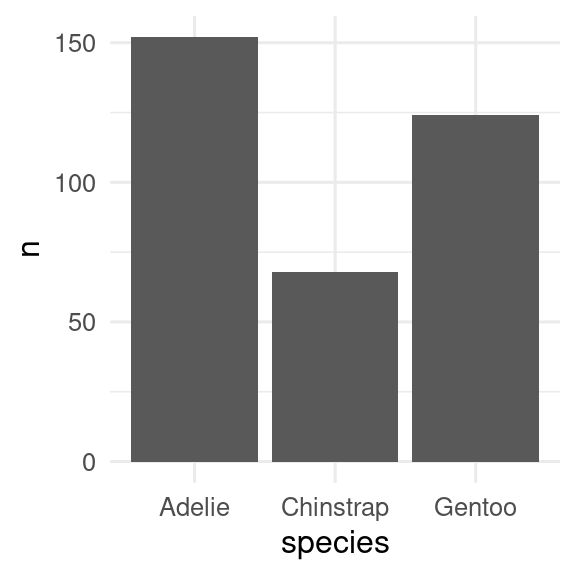
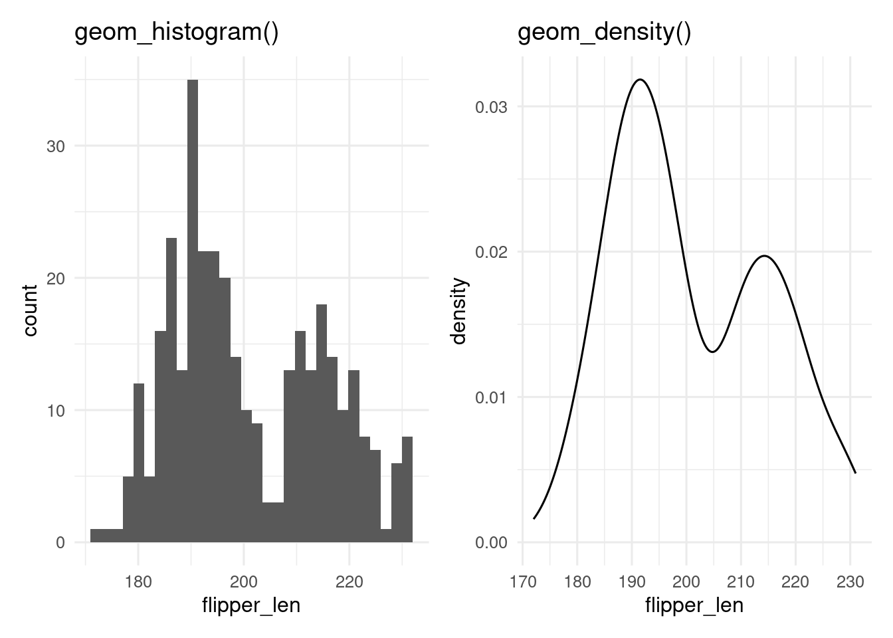
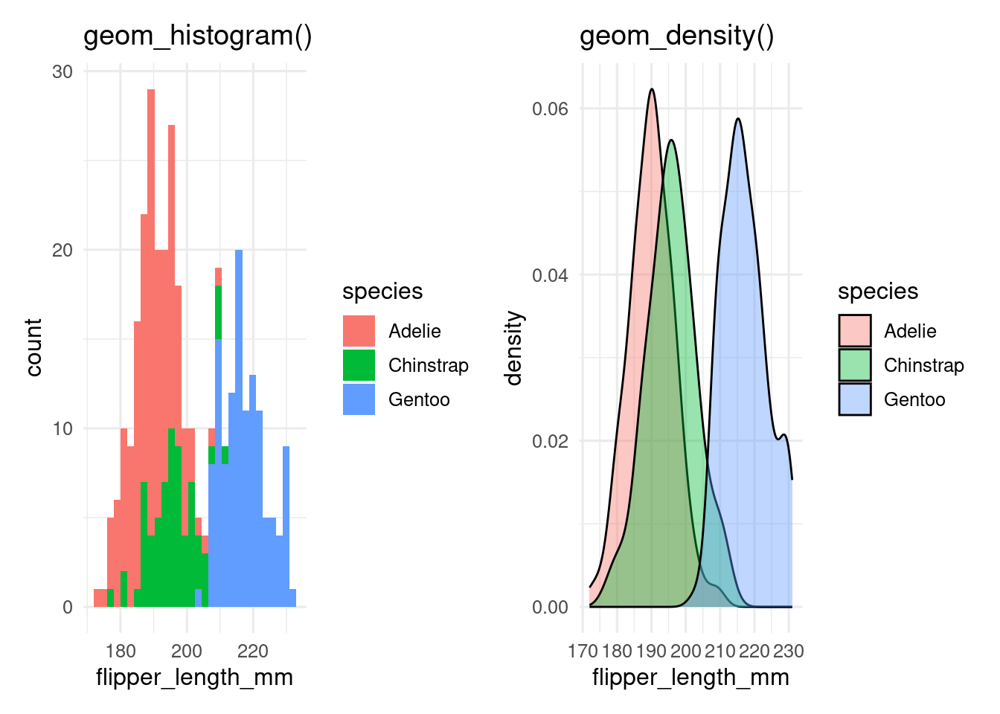
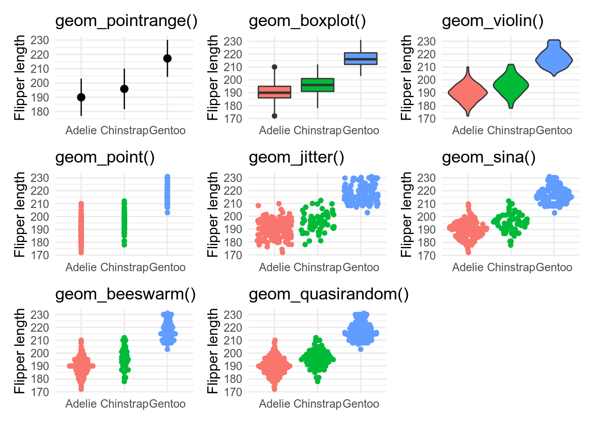
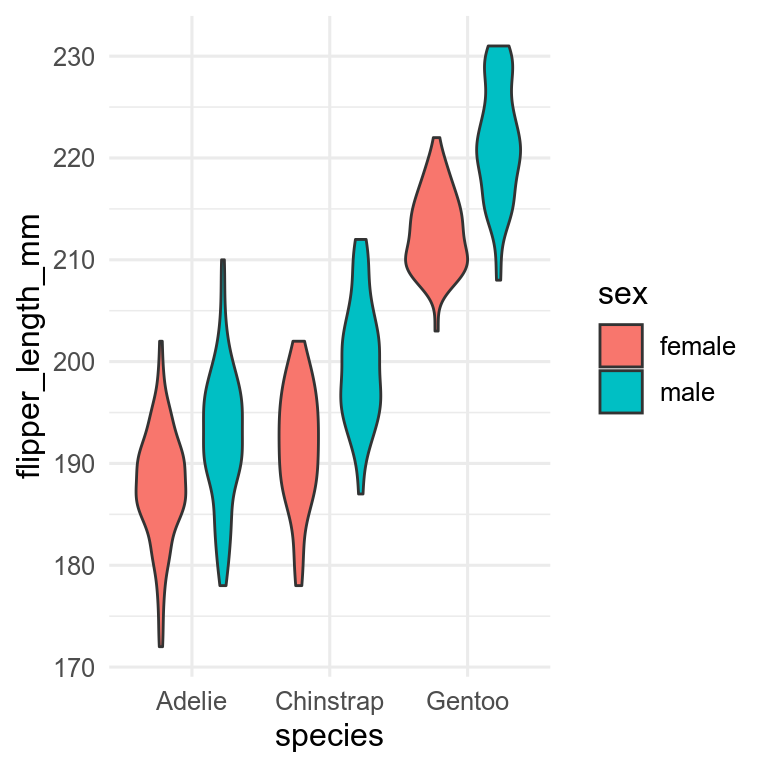
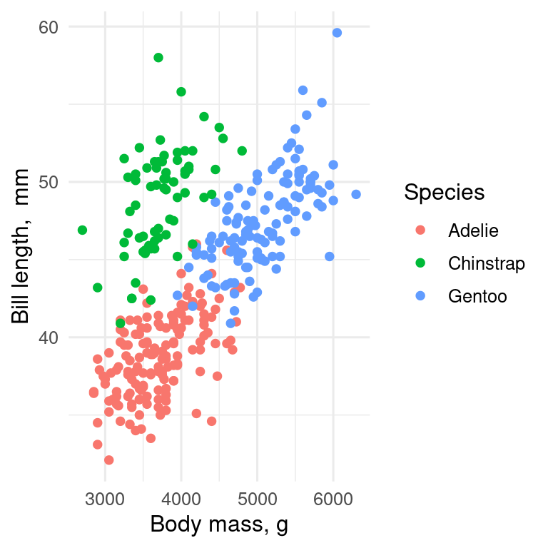
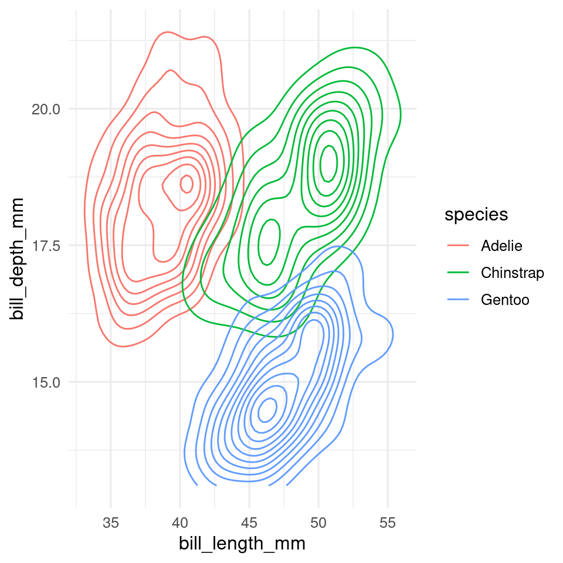
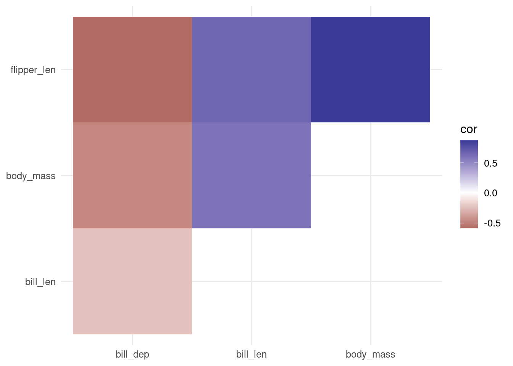

ggplot(penguins, aes(x = species)) +
geom_bar()14 Choosing your visualisation
The key to deciding what type of plot to make is to determine what type of data you have and what you are trying to show.
Before we start
You should
- Understand categorical and continuous variables
- Be familiar with
ggplot
14.1 Amounts
You can use barplots to show amounts. geom_bar() will count how many observations there are of each type.
If we have already calculated the amount, then we can use geom_col() to get an identical figure.
penguins |>
count(species) |>
ggplot(aes(x = species, y = n)) +
geom_col()
14.2 Distribution of a continuous variable
Histograms and density plots are often used to show the distribution of a continuous variable. These can be made with geom_histogram() and geom_density(), respectively. Histograms split the data into bins and usually show the number of observations in each bin. Density plots use a kernel smoother (often a Gaussian kernel - the normal bell-shaped curve) to give a smooth version of a histogram.
base <- ggplot(penguins, aes(x = flipper_length_mm))
p_hist <- base + geom_histogram()
p_dens <- base + geom_density()
p_hist
p_dens
A key decision with histograms is how many bins to use, which can be set with the bins argument. Too few bins and information is lost, too many and the result is very noisy. Always try different values. The placing of the bins can be controlled with the boundary or center.
Exercise
Make a histogram of the penguins bill length. Change the number of bins. What how many bins seem to work best?
Hint
Change the bins argument in geom_histogram
Density plots can fail if there are sharp breaks in the data, and they can extrapolate into impossible regions (e.g. negative ages on a density plot of ages).
Exercise
Make a density plot of the penguins bill length. Use the adjust argument to make the bandwidth of the smoother wider or narrower than the default.
Hint
Change the adjust argument in geom_density
14.3 A few distributions of a continuous variable
If we want show the distribution of a continuous variable conditioned by a categorical variable, we can add a fill aesthetic to the histogram or density plot.
base <- ggplot(penguins, aes(x = flipper_length_mm, fill = species))
p_hist <- base + geom_histogram()
p_dens <- base + geom_density(alpha = 0.4) # set alpha to make transparent
p_hist
p_dens
By default, geom_histogram() gives a stacked histogram, while geom_density() plots the curves behind each other, which makes them easier to compare. This behaviour can be changed with the position argument.
With more than a few levels of the categorical variable, this becomes unreadable, especially for the histogram, and we need another way to show the data.
Exercise
Make a histogram of the penguins bill length, showing the different species with different fills. Make the fill semi-transparent with the alpha argument. Change the position argument from "stack" to "identity". Which position is easiest to interpret?
Exercise
Make a density plot of the penguins bill length, showing the different species with different fills. Make the fill semi-transparent with the alpha argument. Change the position argument from "identity" to "stack". Which position is easiest to interpret?
14.4 Many distributions of a continuous variable
base <- ggplot(penguins, aes(x = species, y = flipper_length_mm))
p_prange <- base + stat_summary(fun.data = mean_sdl)
p_box <- base + geom_boxplot(aes(fill = species))
p_vio <- base + geom_violin(aes(fill = species))
p_point <- base + geom_point(aes(colour = species))
p_jit <- base + geom_jitter(aes(colour = species))
library(ggforce)
p_sina <- base + geom_sina(aes(colour = species))
library(ggbeeswarm)
p_bees <- base + geom_beeswarm(aes(colour = species))
p_quasi <- base + geom_quasirandom(aes(colour = species))
-
geom_pointrange()is showing the mean \(\pm\) 2 standard deviations. It is a bad choice as it shows nothing of the raw data. -
geom_boxplot()shows the median as the middle black line; the box encloses the central 50 % of the data (from the lower to the upper quantiles). Whiskers stretch out as far as the maximum/minimum value that is within 1.5x the width of the central box. Outliers beyond this are shown as points. -
geom_violin()are likegeom_density()curves, turned on their side and reflected. They show the shape of the distribution better than boxplots, and can work better than boxplots, especially for non-unimodal data. -
geom_point()shows the data, but is not very informative because of over-plotting. -
geom_jitter()reduces over-plotting but does not show the distribution very well -
geom_sina(),geom_beeswarm()andgeom_quasirandom(), all from extra packages, attempt to minimise over-plotting while showing the shape of the distribution.
It is possible to use multiple geoms on top of each other, for example, geom_sina() and geom_violin()
14.5 Many distributions of a continuous variable split by a categorical variable
penguins |>
drop_na(flipper_length_mm, sex) |>
ggplot(aes(x = species, y = flipper_length_mm)) +
geom_violin(aes(fill = sex))
Need to decide which variable to have on the x-axis and which to have as fill. Can also use facets with more complex plots.
14.6 Association between two continuous variables
The standard plot for two continuous variables is the scatterplot, which we can get with geom_point().
ggplot(penguins, aes(x = body_mass_g, y = bill_length_mm, colour = species)) +
geom_point() +
labs(x = "Body mass, g", y = "Bill length, mm", colour = "Species")
The x-axis should be the predictor (independent) variable, and the y-axis the response (dependent) variable. With observational data, it may not be so obvious which variable should be on which axis.
With lots of data, especially if it is of low precision, there can be a problem with over-plotting.
Several solutions, which can be used together
- transparency. Make the points semi-transparent by setting
alpha. Now where there are many points the plot will appear darker. -
jitter, add a small amount of noise to the data by usinggeom_jitter()instead ofgeom_point() -
geom_count()show bubbles scaled according to how many points there are at each point. -
geom_density2d()contour lines of the density of points. -
geom_bin2d()orgeom_hexbin()to make 2-dimensional histograms.
14.6.1 2D density
ggplot(data = penguins, aes(x = bill_length_mm, y = bill_depth_mm, colour = species)) +
geom_density2d()
14.7 Association between more than two continuous variables
Some choices
- use an ordination to reduce the data to two orthogonal dimensions (See BIO303)
- use a heatmap of the correlations between variables
- plot all possible pairs of variables with
GGally::ggpairs()
14.7.1 GGally::ggpairs
14.7.2 Heatmap
First calculate the correlations between the numeric variables, then reshape the data into long format,
# Select only numeric variables and remove all NAs
penguin_matrix <- penguins |>
select(bill_length_mm:body_mass_g) |>
drop_na(bill_length_mm)
# Calculate the correlation between all variables and rearrange the table
cor_matrix <- cor(penguin_matrix)
# rearrange
cor_long <- cor_matrix |>
as.data.frame() |>
rownames_to_column() |>
pivot_longer(cols = -rowname, names_to = "colname", values_to = "cor") |>
#only upper triangle
filter(rowname < colname)Now we can use the function geom_tile() to plot the data.
ggplot(data = cor_long, aes(x = rowname, y = colname, fill = cor)) +
geom_tile() +
scale_fill_gradient2() +
theme(axis.title = element_blank())
Alternatively, we can use geom_point() and use the size aesthetic to scale the points by the absolute value of the correlation to give more visual weight to the larger correlations.
ggplot(data = cor_long, aes(x = rowname, y = colname, colour = cor, size = abs(cor))) +
geom_point() +
scale_colour_gradient2() +
scale_size_continuous(range = c(2, 20)) +
theme(axis.title = element_blank())
14.7.3 Lines
Temporal data are often plotted with line plots. Time is usually on the x axis.
geom_line() will draw a line from the left to the right of the screen regardless of the order of the data. If the order of the data are important, use geom_path() instead.
Contributors
- Aud Halbritter
- Richard Telford